library(ggplot2)
library(tidyr)
library(purrr)
library(dplyr)STA 9890 - Regression II: Regularized Regression
\[\newcommand{\E}{\mathbb{E}} \newcommand{\R}{\mathbb{R}} \newcommand{\bx}{\mathbf{x}}\newcommand{\bbeta}{\mathbf{\beta}} \newcommand{\bX}{\mathbf{X}} \newcommand{\by}{\mathbf{y}} \newcommand{\bz}{\mathbf{z}} \newcommand{\bA}{\mathbf{A}} \newcommand{\bb}{\mathbf{b}} \newcommand{\bc}{\mathbf{c}} \newcommand{\bH}{\mathbf{H}} \newcommand{\bI}{\mathbf{I}} \newcommand{\V}{\mathbb{V}} \newcommand{\argmin}{\text{arg min}}\]
Last week we showed the following:
- OLS can be derived purely as a ‘loss minimization’ problem without reference to specific probabilistic models; this is an instance of the general strategy of empirical risk management
- OLS is a convex problem, making it particularly easy to solve even if we don’t use the closed-form solution
- The BLUE property of OLS is perhaps less interesting than it sounds as it requires very strong assumptions on the data generating process which are unlikely to hold in practice
- MSE, the loss we used to pose OLS, can be decomposed as \(\text{Bias}^2 + \text{Variance}\)
- Because BLUE restricts to unbiased estimators, the MSE of OLS is all variance
We begin this week by asking if we can do better than OLS. To keep things simple, we begin by assuming we are under a linear DGP (so no ‘model error’) but that’s only a mathematical niceity. It’s not something you should always assume - in fact, it is really more important to think about how models do on non-linear DGPs. As we will see, it may still be useful to use linear models…
Because OLS is BLUE under our assumptions, we know that we need to relax one or more of our assumptions to beat it. For now, we will focus on relaxing the U - unbiasedness; non-linear methods come later in this course.
Recalling our decomposition:
\[\text{MSE} = \text{Bias}^2 + \text{Variance}\]
Our gambit is that we can find an alternative estimator with a bit more bias, but far less variance. Before we attempt to do so for linear regression, let’s convince ourselves this is possible for a much simpler problem - estimating means.
Estimating Normal Means
Suppose we have data from a distribution \[X_i \buildrel \text{iid} \over \sim \mathcal{N}(\mu, 1)\] for some unknown \(\mu\) that we seek to estimate. Quite reasonably, we might use the sample mean \[\overline{X}_n = \frac{1}{n}\sum_{i=1}^n X_i\] to estimate \(\mu\). Clearly, this is an unbiased estimator and it has variance given by \(1/n\), which isn’t bad. In general, it’s pretty hard to top this.
We can verify all of this empirically:
compute_mse_sample_mean <- function(mu, n){
# Compute the MSE estimating mu
# with the sample mean from n samples
# We repeat this process a large number of times
# to get the expected MSE
R <- replicate(1000, {
X <- rnorm(n, mean=mu, sd=1)
mean(X)
})
data.frame(n=n,
mu=mu,
bias=mean(R - mu),
variance=var(R),
mse=mean((R - mu)^2))
}
MU_GRID <- seq(-5, 5, length.out=501)
N <- 10
SIMRES <- map(MU_GRID, compute_mse_sample_mean, n=N) |> list_rbind()Our bias is essentially always zero:
ggplot(SIMRES, aes(x=mu, y=bias)) +
geom_point() +
geom_abline(slope=0,
intercept=0,
color="black",
lwd=2,
lty=2) +
xlab(expression("True Parameter:" ~ mu)) +
ylab(expression("Bias"^2)) +
ggtitle("Constant Zero Bias of Sample Mean Estimator") +
theme_bw()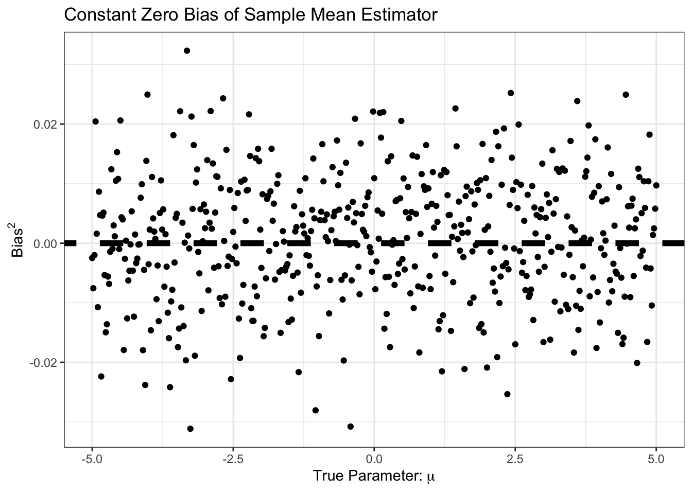
Similarly, our bias is small, and constant. Specifically, it is around \(1/n\) as predicted by standard theory:
ggplot(SIMRES, aes(x=mu, y=variance)) +
geom_point() +
geom_abline(intercept=1/N,
slope=0,
color="black",
lwd=2,
lty=2) +
xlab(expression("True Parameter:" ~ mu)) +
ylab("Variance of Sample Mean") +
ggtitle("Constant Variance of Sample Mean Estimator") +
theme_bw()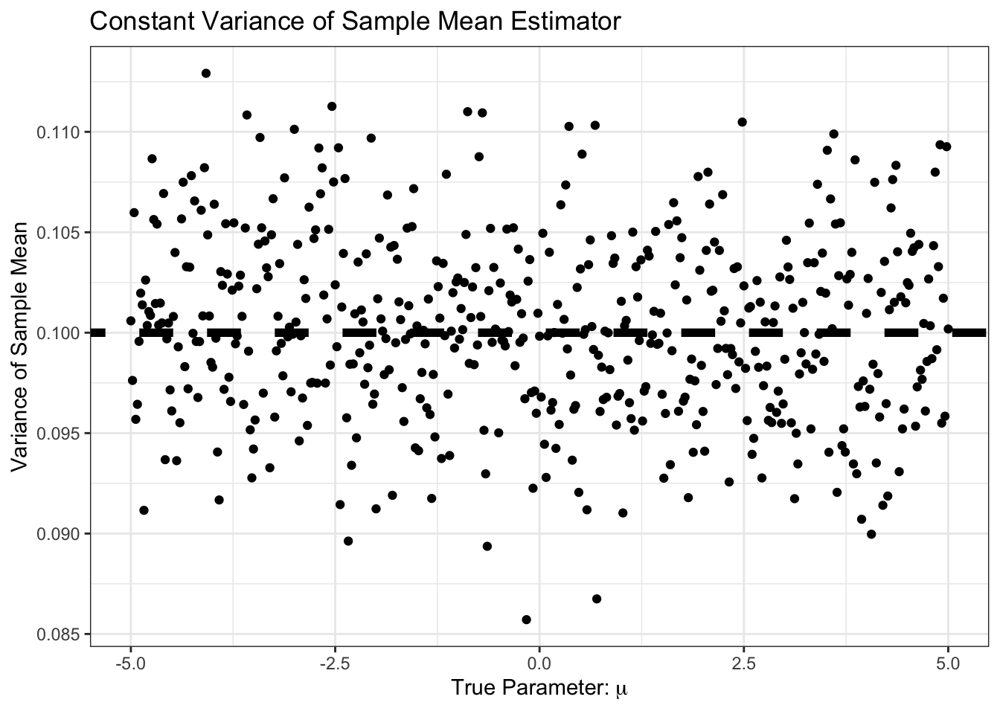
As expected, the MSE is the sum of bias and variance, so it’s basically just variance here:
ggplot(SIMRES, aes(x=mu, y=mse)) +
geom_point() +
geom_abline(intercept=0,
slope=0,
color="black",
lwd=2,
lty=2) +
geom_abline(intercept=1/N,
slope=0,
color="black",
lwd=2,
lty=2) +
xlab(expression("True Parameter:" ~ mu)) +
ylab("Sample Mean MSE ") +
ggtitle("Constant MSE of Sample Mean Estimator") +
theme_bw()Warning: Removed 1 row containing missing values or values outside the scale range
(`geom_segment()`).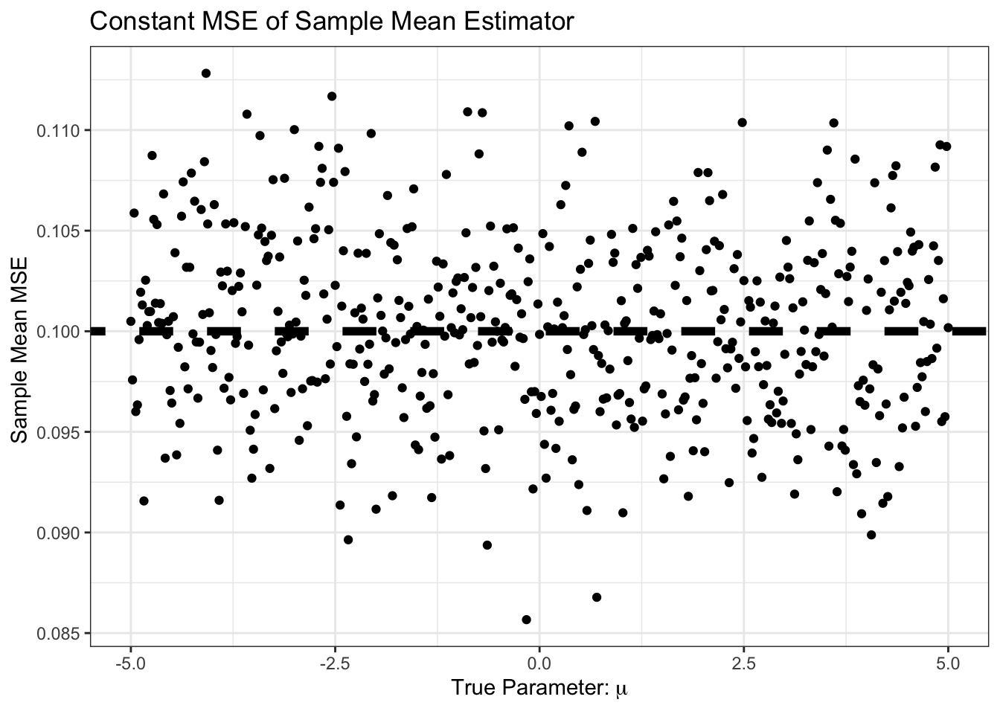
So far, it looks like the sample mean is hard to beat. In particular, this curve is But… what if we know, e.g., that \(\mu\) is positive. We might still use the sample mean, but with the additional step that we set it to zero if the sample mean looks negative. That is, our new estimator is \[\hat{\mu} = (\overline{X}_n)_+ \text{ where } z_+ = \begin{cases} z & z > 0 \\ 0 & z \leq 0 \end{cases}\]
The \((\cdot)_+\) operator is known as the positive-part. How does this \(\hat{\mu}\) do?
pospart <- function(x) ifelse(x > 0, x, 0)
compute_mse_positive_mean <- function(mu, n){
# Compute the MSE estimating mu
# with the positive part of the sample mean from n samples
# We repeat this process a large number of times
# to get the expected MSE
R <- replicate(1000, {
X <- rnorm(n, mean=mu, sd=1)
pospart(mean(X))
})
data.frame(n=n,
mu=mu,
bias=mean(R - mu),
variance=var(R),
mse=mean((R - mu)^2))
}
SIMRES_POSPART <- map(MU_GRID, compute_mse_positive_mean, n=N) |>
list_rbind()ggplot(SIMRES_POSPART, aes(x=mu, y=mse)) +
geom_point() +
geom_abline(intercept=0,
slope=0,
color="black",
lwd=2,
lty=2) +
geom_abline(intercept=1/N,
slope=0,
color="black",
lwd=2,
lty=2) +
xlab(expression("True Parameter:" ~ mu)) +
ylab("Positive Part Mean MSE") +
ggtitle("Constant MSE of Positive Part Mean Estimator") +
theme_bw()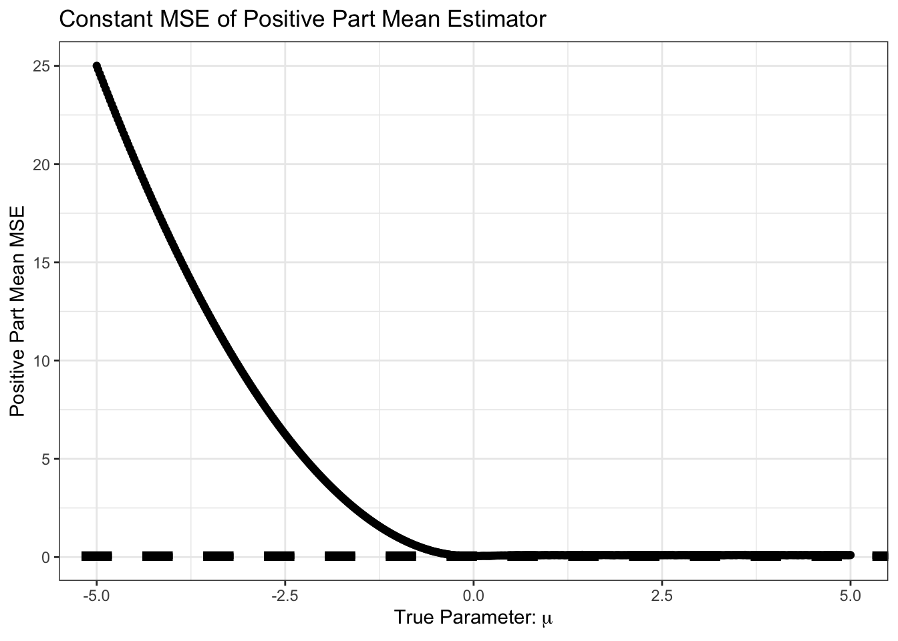
Not surprisingly, we do very poorly if we are estimating a negative \(\mu\) but we assume it is positive. Let’s zoom in on the area near 0 however.
SIMRES_POSPART |>
filter(mu >= -0.5,
mu <= 1) |>
ggplot(aes(x=mu, y=mse)) +
geom_point() +
geom_abline(intercept=0,
slope=0,
color="black",
lwd=2,
lty=2) +
geom_abline(intercept=1/N,
slope=0,
color="black",
lwd=2,
lty=2) +
xlab(expression("True Parameter:" ~ mu)) +
ylab("Positive Part Mean MSE") +
ggtitle("Constant MSE of Positive Part Mean Estimator") +
theme_bw()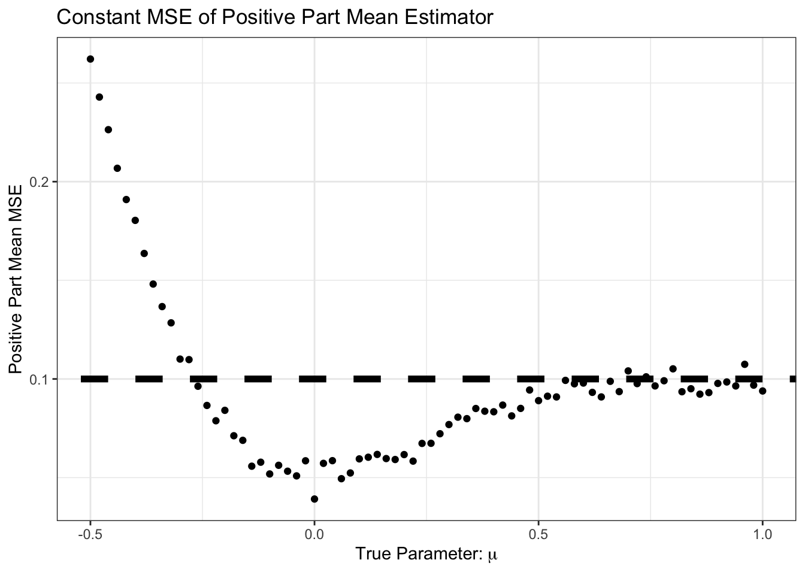
Interesting! For some of these values, we do better than the sample mean.
In particular, we do better in the following scenario:
- True mean is positive
- Sample mean is negative
- Positive part of sample mean is zero, so closer than pure sample mean
The probability of step 2 (sample mean is negative) is near zero for large \(\mu\), but for \(\mu\) in the neighborhood of zero, it can happen.
Pause to Reflect
Review Question: As a function of \(\mu\), what is the probability that \(\overline{X}_n\) is negative? You can leave your answer in terms of the standard normal CDF \(\Phi(\cdot)\).
This is pretty cool. We have made an additional assumption and, when that assumption holds, it helps us or, worst case, doesn’t really hurt us much. Of course, when the assumption is wrong (\(\mu < 0\)), we do much worse, but we can’t really hold that against \((\overline{X}_n)_+\).
Looking more closely, we can look at the bias of \((\overline{X}_n)_+\):
SIMRES_POSPART |>
filter(mu >= -0.5,
mu <= 1) |>
ggplot(aes(x=mu, y=bias)) +
geom_point() +
geom_abline(intercept=0,
slope=0,
color="black",
lwd=2,
lty=2) +
geom_abline(intercept=1/N,
slope=0,
color="black",
lwd=2,
lty=2) +
xlab(expression("True Parameter:" ~ mu)) +
ylab(expression("Bias"^2)) +
ggtitle("Bias of Positive Part Mean Estimator") +
theme_bw()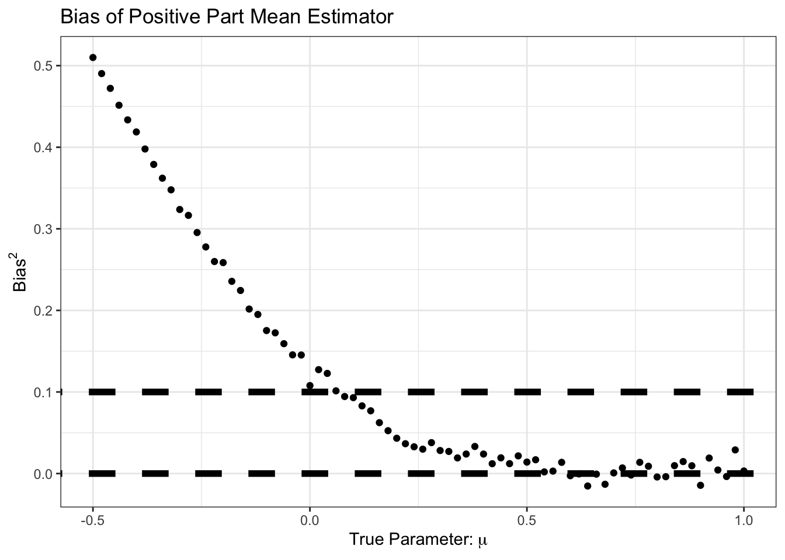
We see here that our improvement came at the cost of some bias, particularly in the \(\mu \in [0, 1]\) range. But for that bias, we see a good reduction in variance:
SIMRES_POSPART |>
filter(mu >= -0.5,
mu <= 1) |>
ggplot(aes(x=mu, y=variance)) +
geom_point() +
geom_abline(intercept=1/N,
slope=0,
color="black",
lwd=2,
lty=2) +
xlab(expression("True Parameter:" ~ mu)) +
ylab(expression(Variance^2)) +
ggtitle("Non-Constant Variance of Positive Part Mean Estimator") +
theme_bw()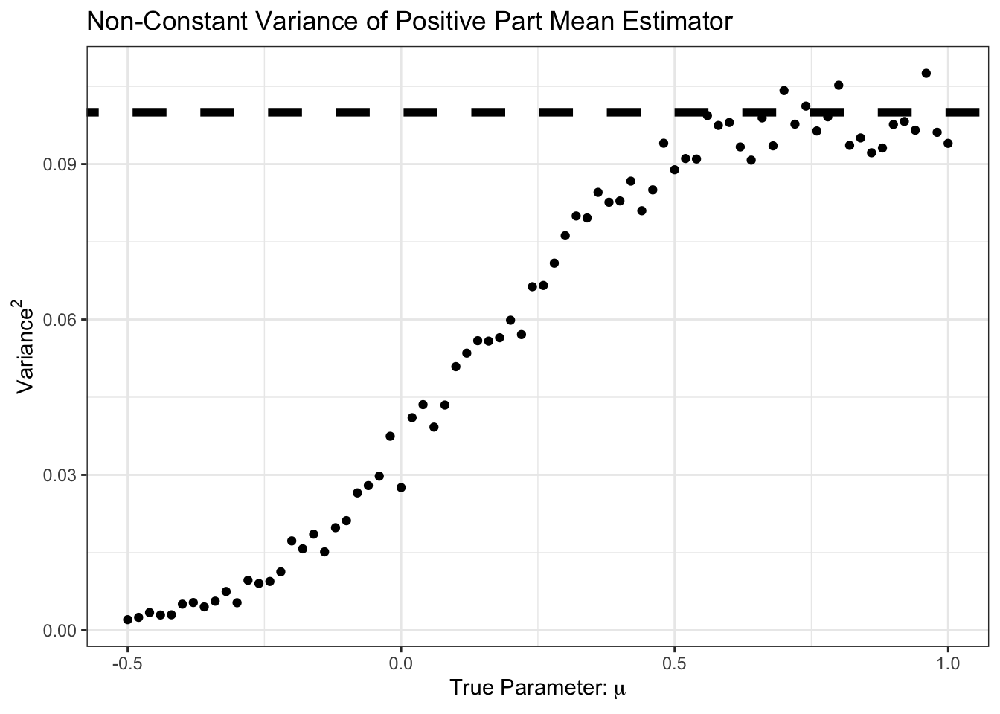
Here, we see that the variance is less than \(1/n\) from \(\mu \approx 0.5\) and down. Let’s plot variance and bias against each other:
library(geomtextpath)
SIMRES_POSPART |>
filter(mu >= 0,
mu <= 1) |>
ggplot(aes(x=bias, y=variance)) +
geom_point() +
geom_textline(aes(x=bias, y=1/n - bias),
lty=2, color="red4",
label="Breakeven") +
ylim(c(0, 0.1)) +
theme_bw() +
xlab(expression("Bias"^2)) +
ylab("Variance") +
ggtitle("Bias-Variance Tradeoff for Positive Part Sample Mean")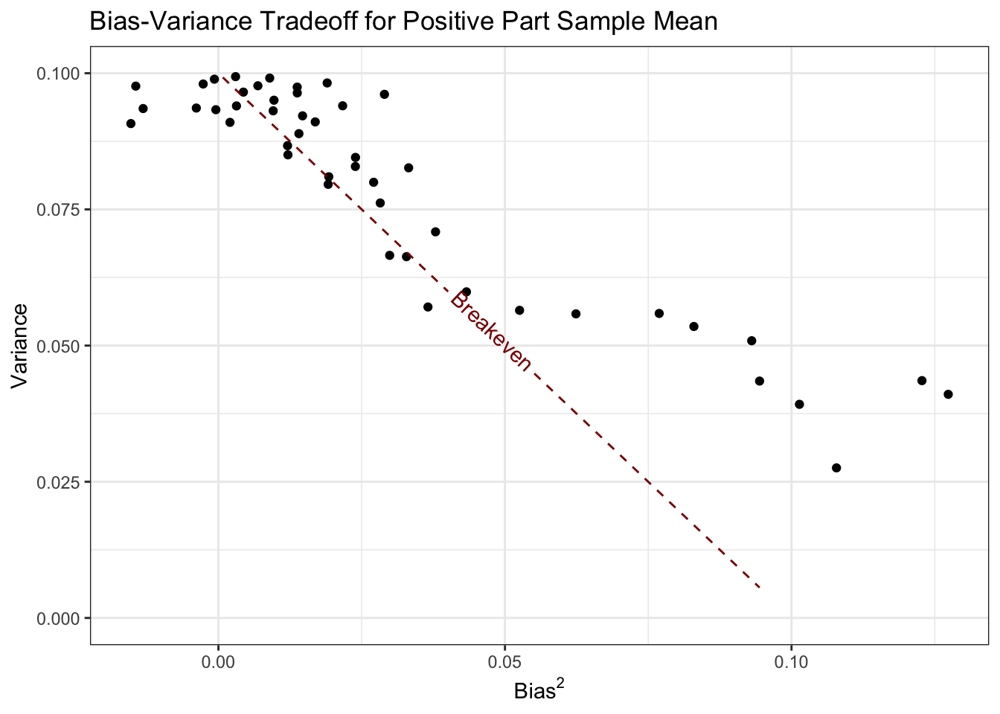
Here, all of the values of \(\mu\) corresponding to points below this line are points where the positive part estimator does better than the standard sample mean.
Pause to Reflect
See if you can compute the bias and variance of \((\overline{X}_n)_+\) in closed form. The moments of the Rectified Normal Distribution may be of use.
Ok - now let’s start to generalize. Clearly, the first step is to change the ‘positive’ assumption. The easiest generalization is to restrict \(\mu\) to an interval \([a, b]\). In this case, it makes sense to replace the positive part operator with a ‘clamp’ operator:
\[(x)_{[a, b]} = \begin{cases} a & x \leq a \\ x & x\in(a, b) \\ b & x \geq b \end{cases}\]
The positive part operator we applied before is \((x)_+ = (x)_{[0, \infty)}\).
Pause to Reflect
Extend the simulation above to characterize the estimation performance (bias and variance) of \((\overline{X}_n)_[a, b]\).
A particularly useful version of this bound is taking \((\overline{X}_n)[-\beta, +\beta]\); that is, we don’t know the sign of \(\mu\), but we know it is less than \(\beta\) in magnitude. This is not an improbable assumption - we often have a good sense of the plausible magnitude of a parameter (Bayesian priors anyone?) - but it feels a bit ‘firm’. Can we relax this sort of assumption? We want \(\mu\) to be ‘not too big’, but we’re willing to go big if the data takes us there.
We can implement this as follows:
\[\hat{\mu}_{\alpha} = \frac{\overline{X}_n}{1+\alpha}\]
Clearly, setting \(\alpha = 0\) gets us back to the standard sample mean. Can this be better than the sample mean? Let’s do the calculations by hand. First we note that \(\E[\hat{\mu}_{\alpha}] = \frac{\mu}{1+\alpha}\) giving a bias of \[\text{Bias} = \E[\hat{\mu}_{\alpha}] - \mu = \mu\left(1 - \frac{1}{1+\alpha}\right) \implies \text{Bias}^2 = \mu^2\left(1 - \frac{1}{1+\alpha}\right)^2\] and
\[\text{Variance} = \V[\hat{\mu}_{\alpha}] = \frac{1}{(1+\alpha)^2}\V[\overline{X}_n] = \frac{1}{n(1+\alpha)^2}\]
so the total MSE is given by
\[\begin{align*} \text{MSE} &= \E[(\hat{\mu}_{\alpha} - \mu)^2] \\ &= \text{Bias}^2 + \text{Variance} \\ &= \mu^2\left(1 - \frac{1}{1+\alpha}\right)^2 + \frac{1}{n(1+\alpha)^2} \end{align*}\]
For suitable \(\alpha, n\) this can be less than the standard MSE of \(1/n\). For instance, at \(\mu = 5\) and \(n = 10\),
shrunk_mean_mse <- function(mu, n, alpha){
mu^2 * (1 - 1/(1+alpha))^2 + 1/(n * (1+alpha)^2)
}
shrunk_mean_mse(5, 10, 1e-4)[1] 0.09998025Not great - but an improvement! It’s actually pretty hard to beat the sample mean with an estimator of this form in the univariate case, but it can be incredibly useful in more general settings.
James-Stein Estimation of Multivariate Normal Means
TODO
Ridge Regression
Above, we saw that \((\overline{X}_n)_{[-\beta, \beta]}\) could outperform \(\overline{X}_n\) if the true parameter is ‘not too big’. Can we extend this idea to regression?
Recall that we formulated OLS as:
\[\hat{\bbeta}_{\text{OLS}} = \argmin_{\bbeta \in \R} \frac{1}{2}\|\by - \bX\bbeta\|\]
We can apply a ‘clamp’ as:
\[\hat{\bbeta}_{\tau-\text{Clamped}} = \argmin_{\bbeta \in \R: \|\bbeta\| < \tau} \frac{1}{2}\|\by - \bX\bbeta\| = \argmin_{\bbeta \in \R} \frac{1}{2}\|\by - \bX\bbeta\| \text{ such that } \|\bbeta\| \leq {\tau}\]
Here, we have some choice in measuring the ‘size’ of \(\hat{\bbeta}\): in fact, we can theoretically use any of our \(\ell_p\)-norms. As with the squared loss, it turns out to be mathematically easiest to start with the \(\ell_2\) (Euclidean) norm. This gives us the ridge regression problem:
\[\hat{\bbeta}_{\text{Ridge}} = \argmin_{\bbeta \in \R} \frac{1}{2}\|\by - \bX\bbeta\| \text{ such that } \|\bbeta\|_2 \leq {\tau} = \argmin_{\bbeta \in \R} \frac{1}{2}\|\by - \bX\bbeta\| \text{ such that } \|\bbeta\|_2^2 \leq {\tau}^2\]
Before we discuss solving this, let’s confirm it is convex. Recall that for a problem to be convex, it needs to have a convex objective and a convex feasible set. Clearly the objective here is convex - we still have the MSE loss from OLS unchanged. So now we need to convince ourselves that \(\|\bbeta\|_2^2 \leq \tau^2\) defines a convex set. We can look at this in 2D first:
\[\|\bbeta\|_2^2 \leq \tau^2 \implies \beta_1^2 + \beta_2^2 \leq \tau\]
But this is just the equation defining a circle and its interior (in math speak a 2D ‘ball’) so it has to be convex!
In fact, constraints of the form
\[\|\bbeta\|_p \leq \tau \Leftrightarrow \|\bbeta\|_p^2 \leq \tau^p\]
are convex for all \(\ell_p\) norms (\(p \geq 1\)). We will use this fact many times in this course. The sets that this constraint defines are called \(\ell_p\) ‘balls’ by analogy with the \(\ell_2\) figure.
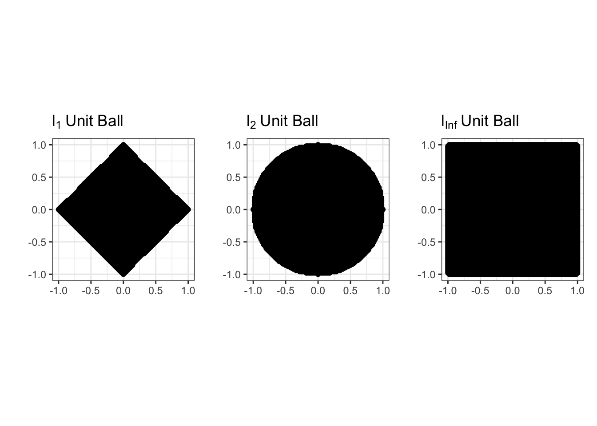
So our ridge problem
\[\hat{\bbeta}_{\text{Ridge}} = \argmin_{\bbeta \in \R} \frac{1}{2}\|\by - \bX\bbeta\| \text{ such that } \|\bbeta\|_2^2 \leq {\tau}^2\] is indeed convex. While we can solve this without too much trouble, it turns out to be easier to use an optimization trick known as Lagrange Multipliers to change this to something easier to solve.
The Method of Lagrange Multipliers lets us turn constrained optimization problems that look like:
\[\argmin_x f(x) \text{ such that } g(x) \leq \tau\]
into unconstrained problems like:
\[\argmin_x f(x) + \lambda g(x)\]
Here, the constant \(\lambda\) is known as the Lagrange multiplier. Instead of forcing \(g(x)\) to be bounded, we simply penalize any \(x\) that makes \(g(\cdot)\) large. For large enough penalties (large \(\lambda\)), we will eventually force \(g(x)\) to be small enough that we satisfy the original constraint. In fact, there is a one-to-one relationship between \(\tau\) and \(\lambda\), but it’s usually not possible to work it out in any meaningful useful manner; all we can say is that larger \(\lambda\) correspond to smaller \(\tau\).
Pause to Reflect
Why is this true? Why does small \(\tau\) imply large \(\lambda\) and vice versa?
In this form, it’s straightforward to pose ridge regression as:
\[\argmin_{\beta} \frac{1}{2}\|\by - \bX\bbeta\|_2^2 + \frac{\lambda}{2}\|\bbeta\|_2^2\]
Pause to Reflect
Why were we allowed to put an extra \(\frac{1}{2}\) in front of the penalty term?
You will show in Report #01 that the solution to this problem is given by:
\[\hat{\bbeta}_{\lambda} = (\bX^{\top}\bX + \lambda \bI)^{-1}\bX^{\top}\by\]
There are several important things to note about this expression:
There are actually many ridge regression solutions, one for each value of \(\lambda\). It is a bit improper to refer to “the” ridge regression solution. We will discuss selecting \(\lambda\) below.
If you are a bit sloppy, this looks something like:
\[\hat{\beta} \approx \frac{SS_{XY}}{SS_{XX} + \lambda}\]
so we ‘shrink’ the standard OLS solution towards zero, by an amount depending on \(\lambda\).
The penalized form (as opposed to the constraint form) allows for \(\hat{\beta}\) to be arbitrarily large, if the data supports it.
If we set \(\lambda = 0\), we recover standard OLS.
Unlike the OLS solution, the ridge regression exists even when \(p > n\).
While this isn’t as simple to analyze as some of the expressions we considered above, this looks similar enough to our ‘shrunk’ mean estimator that it’s plausible it will improve on OLS. In fact, you will show in Report #01 that there is always some value of \(\lambda\) that guarantees improvement over OLS.
To wit,
n <- 100
p <- 80
Z <- matrix(rnorm(n * p), nrow=n)
L <- chol(toeplitz(0.6^(1:p))) # Add 'AR(1)' correlation
X <- Z %*% L
beta <- runif(p, 2, 3)
eye <- function(n) diag(1, n, n)
calculate_ridge_mse <- function(lambda, nreps = 1000){
MSE <- mean(replicate(nreps, {
y <- X %*% beta + rnorm(n, sd=1)
beta_hat <- solve(crossprod(X) + lambda * eye(p), crossprod(X, y))
sum((beta - beta_hat)^2)
}))
data.frame(lambda=lambda, MSE=MSE)
}
lambda_grid <- 10^(seq(-2, 2, length.out=41))
RIDGE_MSE <- map(lambda_grid, calculate_ridge_mse) |> list_rbind()
OLS_MSE <- calculate_ridge_mse(0)$MSE # Ridge at lambda = 0 => OLS
ggplot(RIDGE_MSE, aes(x=lambda, y=MSE)) +
geom_point() +
geom_line() +
geom_abline(intercept=OLS_MSE, slope=0, lwd=2, lty=2) +
xlab(expression(lambda)) +
ylab("Estimation Error (MSE)") +
ggtitle("Ridge Regularization Improves on OLS") +
theme_bw() +
scale_x_log10()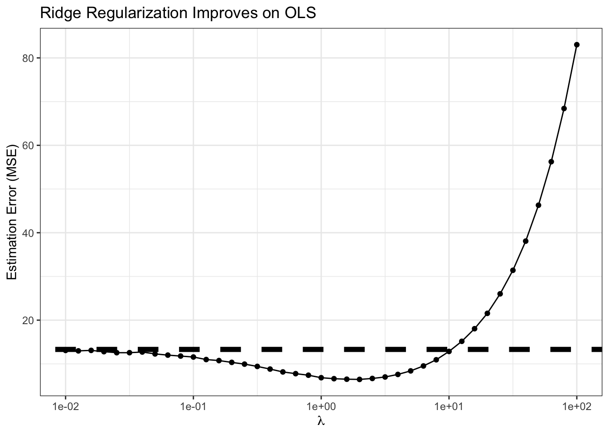
Clearly, for smallish \(\lambda\), we are actually outperforming OLS, sometimes by a significant amount! For this problem, the minimum MSE (best estimate) actually seems to occur near \(\lambda \approx\) 1.995
Model Selection
While theory and our experiment above tell us that there is some value of \(\lambda\) that beats OLS, how can we actually find it? We can’t do a simulation like above as we had to know \(\bbeta_*\) to compute the MSE and the theory is non-constructive. (In particular, we have to know \(\bbeta_*\) to compute the bias.)
Well, we can go back to our overarching goal: we want results that generalize to unseen data. Here, in particular, we want results that predict well on unseen data. So let’s just do that.
We can split our data into a training set and a validation set. The training set is like we have already seen, used to estimate the regression coefficients \(\bbeta_{\text{Ridge}}\); the validation set may be new. It is used to compute the MSE on ‘pseudo-new’ data and we then can select the best predicting value of \(\lambda\). In this case, this looks something like the following:
# Continuing with X, beta from above
y <- X %*% beta + rnorm(n, sd = 1)
TRAIN_IX <- sample(n, 0.8 * n)
VALID_IX <- setdiff(seq(n), TRAIN_IX) # Other elements
TRAIN_X <- X[TRAIN_IX, ]
TRAIN_Y <- y[TRAIN_IX]
VALID_X <- X[VALID_IX, ]
VALID_Y <- y[VALID_IX]
compute_validation_error <- function(lambda){
beta_hat_rr <- solve(crossprod(TRAIN_X) + lambda * eye(p),
crossprod(TRAIN_X, TRAIN_Y))
y_pred <- VALID_X %*% beta_hat_rr
data.frame(lambda = lambda,
validation_mse = mean((y_pred - VALID_Y)^2))
}
validation_error <- map(lambda_grid, compute_validation_error) |> list_rbind()
ggplot(validation_error,
aes(x = lambda,
y = validation_mse)) +
geom_point() +
xlab(expression(lambda)) +
ylab("MSE on Validation Set") +
ggtitle("Hold-Out Tuning of Ridge Regression Regularization Parameter") +
theme_bw() +
scale_x_log10()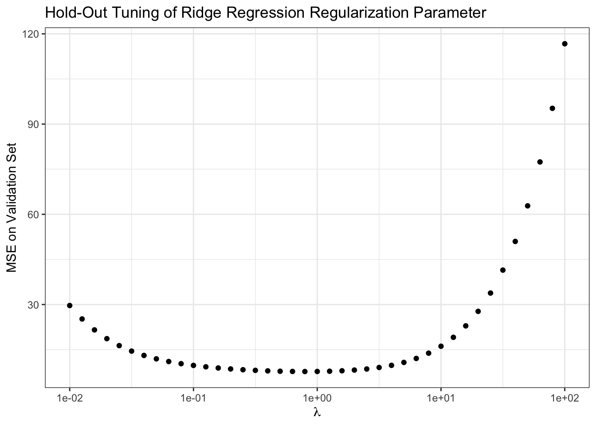
Our results here aren’t quite as definitive as when we knew the true \(\bbeta_*\), but they suggest we want to take \(\lambda \approx\) 0.794 which isn’t too far from what we found above.
Pause to Reflect
Does this procedure give an unbiased estimate of the true test error? Why or why not?
There are some limitations to this basic procedure - randomness and (arguably) inefficient data usage - that we will address later, but this gets us started.
Lasso Regression
Ridge regression is a rather remarkable solution to the problem of ‘inflated’ regression coefficients. But let’s remind ourselves why we find inflated coefficients in the first place.
A common cause of overly large regression coefficients is correlation among the columns of \(\bX\). For example,
max_beta_sim <- function(rho, n, p){
R <- replicate(100, {
Z <- matrix(rnorm(n * p), nrow=n)
L <- chol(toeplitz(rho^(1:p)))
X <- Z %*% L
beta <- runif(p, 2, 3)
y <- X %*% beta + rnorm(n)
beta_hat <- coef(lm(y ~ X))
max(abs(beta_hat))
})
data.frame(beta_max = max(R),
n = n,
p = p,
rho = rho)
}
RHO_GRID <- seq(0.5, 0.999, length.out=101)
BETAS <- map(RHO_GRID, max_beta_sim, n = 40, p = 35) |> list_rbind()
ggplot(BETAS,
aes(x = rho,
y = beta_max))+
geom_point() +
scale_y_log10() +
theme_bw() +
xlab("Feature Correlation") +
ylab("Maximum Observed Regression Coefficient") +
geom_abline(intercept = 3, color="red4", lwd=2, lty=2)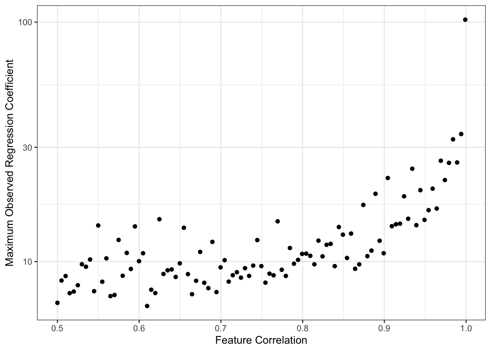
This simulation is maybe a bit unfair to OLS since we are taking maxima instead of averages or similar, but the message is certainly clear. As the columns of \(\bX\) become highly correlated, we get larger values of \(\hat{\beta}\). Because OLS is unbiased here, this is fundamentally a story of variance: as we have more features,
\[\V[\hat{\beta}] \propto (\bX^{\top}\bX)^{-1}\]
increases, making it likely that we see increasingly wild values of \(\hat{\beta}\). (Recall that we generated our data so that \(\beta_*\) was never larger than 3, as noted in red above.)
Why does this happen? It’s maybe a bit tricky to explain, but with highly correlated features the model can’t really distinguish them well, so it ‘overreacts’ to noise and produces very large swings (variance) in response to small changes in the training data. Like above, we can hope to tame some of this variance if we take on a bit of bias.
Another way we might want to ‘calm things down’ and improve on OLS is by having fewer features in our model. This reduces the chance of ‘accidental correlation’ (more features leads to more ‘just because’ correlations) and gives us a more interpretable model overall. (More about interpretability below)
Best Subsets
You have likely already seen some sort of ‘variable selection’ procedures in prior courses: things like forward stepwise, backwards stepwise, or even hybrid stepwise. All of these are trying to get at the idea of only including variables that are ‘worth it’; in other settings, you may also see them used as finding the ‘most valuable’ variables. Let’s use our newfound knowledge of optimization to formalize this.
The best-subsets problem is defined by:
\[\argmin_{\beta} \frac{1}{2}\|\by - \bX\bbeta\|_2^2 \text{ such that } \|\bbeta\|_0 \leq k\]
This looks similar to our ridge regression problem, but now we’ve replaced the \(\ell_2\)-norm constraint with the \(\ell_0\)-‘norm’. Recall that the \(\ell_0\)-‘norm’ is the number of non-zero elements in \(\bbeta\) and that it’s not a real norm. So this says, find the minimum MSE \(\beta\) with at most \(k\) non-zero elements. Since more features always reduces (or at least never increases) training MSE, we can assume that this problem will essentially always pick the best combination of \(k\) variables.
Alternatively, in penalized form, we might write:
\[\argmin_{\beta} \|\by - \bX\bbeta\|_2^2 + \lambda \|\bbeta\|_0\]
Here, we only introduce a new variable if including it lowers our training MSE by \(\lambda\): we’ve implicitly set \(\lambda\) as our ‘worth it’ threshold for variables.
Note that these problems require finding the best combination of variables. The most individually useful variables might not be useful in combination: e.g., someone’s right shoe size might be very useful for predicting their height, and their left shoe size might be very useful for predicting their height, and their gender might be a little bit useful for predicting their height, but you’ll do better with right shoe and gender than with right and left shoe.
Because we’re checking all combinations of variables, this is a so-called ‘combinatorial’ optimization problem. These are generally quite hard to solve and require specialized algorithms (unlike our general purpose convex optimization algorithms). A naive approach of ‘try all models’ becomes impractical quickly. If we have \(p=30\) potential features, that’s \(2^30\), or just over a billion, possible models we would need to check. Even if we can check one model every minute, that takes about 2040 years to check them all; if we have a computer do the work for us and it’s faster, say 1000 models per minute, we still need over 2 years. And that’s just for 30 features! In realistic problems where \(p\) can be in the hundreds or thousands, we have no chance.
Thankfully, smart people have worked on this problem for us and found that for \(p \approx 100 - 1000\), very fancy software can solve this problem.1 But that still leaves us very far we want to go…
TODO:
- Stepwise as approximate algorithm
- Convex relaxation
The Lasso
TODO ### Model Selection TODO
Footnotes
“Best subset selection via a modern optimization lens” by Dimitris Bertsimas, Angela King, Rahul Mazumder Annals of Statististics 44(2): 813-852 (April 2016). DOI: 10.1214/15-AOS1388↩︎